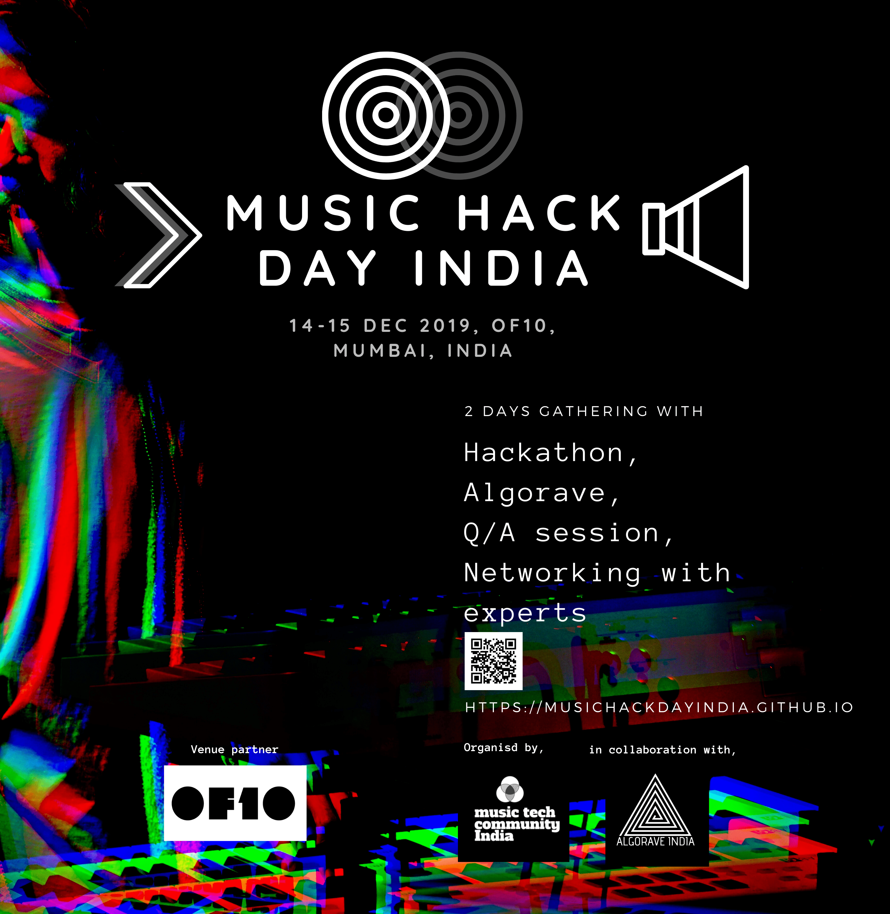
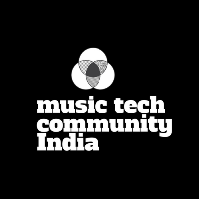

    <!--background color-->
    <script type="text/javascript">
        document.write ('<body style="background: Gainsboro; background-attachment: fixed;">')
    </script>

    <section id="conference" class="black-frame about about-container about-container-top">
      <h1>{{ page.title }}</h1>

      <!-- <p></p> -->
      <p></p>
      <p>Music Hack Day India is a community-driven event where we would like programmers, artists, makers, academics and innovators to come together to ideate, develop and demo their vision of 
        music technology’s future. No restrictions in terms of the medium of the hack - software (mobile, web, desktop), hardware (new instruments, modifications to existing ones). We are open to anything 
        that lies within the boundaries of music technology (even better if the boundaries are extrapolated). One of our bigger goals of organizing such an event is to bring everyone working or interested in this field under one roof so that they can network and collaborate with each other by the means of working on these hacks and further push music tech scene in the Indian sub-continent.</p>
      <p>Music Hack Day India is an open, inclusive and interdisciplinary event. We follow the <a href="https://berlincodeofconduct.org/">Berlin Code of Conduct </a> for the event.</p>
    
      <h2 class="first">Hackathon</h2>

      <p>Do you constantly wish that existing music tech solutions did something more than it already does? Are you often lost in thought wondering if there was a piece of tech that could do the craziest of things with music that you could come up with? Well, this is a chance to put your creative minds to work on bringing just those ideas to life!</p>

      <p>The hackathon starts with an introduction to the event and guidelines, followed by presentations by our chosen mentors, who will help participants with their ideas and questions.  Participants network with each other, brainstorm, form teams and start building their projects. The hackathon will have 3 prizes for the Best Music Hack, Best Hardware Hack and Best Data Science Hack respectively. </p>

      <p>Remember, asking for help is more than okay! Our organisers and mentors will be delighted to help you explore and build on your ideas.</p>

      <p>All the IP/ownership of ideas and works done by the hackathon participants soley lies with themselves.</p>
      
      <p>Check out our <a href="/faqs">FAQ</a> section for frequently asked questions.</p>

      <p>We recommend you to also check out the videos of past music hack days (attached below in the youtube playlist) which were organised around the world.</p>
      <p><iframe width="380" height="235" src="https://www.youtube.com/embed/videoseries?list=PLDWUdiZeVmVUSKx50fHBUB6KVYnUEJghD" frameborder="0" allow="autoplay; encrypted-media" allowfullscreen></iframe></p>
      
      <p>More details will be updated here soon ....</p>

      <h2 class="second">Q/A sessions</h2>

      <h3><i>"Topic to be announced soon"</i></h3>

      <p>Beside the Q/A sessions, the participants will have dedicated networking sessions with professionals from the music tech research space.</p>

      <h2 class="first">Algorave Concerts</h2>

      <p>An algorave (from an algorithm and rave) is an event where people dance to music generated from algorithms, often using live coding techniques. (<a href="https://en.wikipedia.org/wiki/Algorave" target="_blank">wikipedia</a>)</p>
      <p>We are very glad to have our friends from the growing Algorave India community to perform. The artists will be announced soon.</p>

    </section>

    <section id="fourth" class="black-frame about about-container about-container-bottom">
      <h1>About Organisers</h1>

      <p>Music Hack Day is organised by the <a href="http://musictechcommunity.org/" target="_blank">Music Tech Community India</a> in collaboration with the <a href="https://www.facebook.com/algoraveindia/" target="_blank">Algorave India</a> community and also with our dear colloborators.
        Find more about the team <a href="/team">here.</a>
      </p>
      <p></p>
      <p>MTC-India is an open community initiative run by a group of volunteers with a mission to maintain a forum to bring together musicians, technologists, artists, developers, audiophiles and makers in India that are related to music technology.
      The main objective of MTC-India is to foster the communication and interaction between people on different edges of music-tech spectrum, with a hope to build an open, transparent, and actively collaborative community.  
      </p>
      <p></p>
      <p>Algorave India is a community of creative technologists striving to create an environment of making code friendly in India : creating music and visuals with open source creative coding tools.</p>
    </section>
